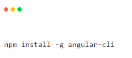
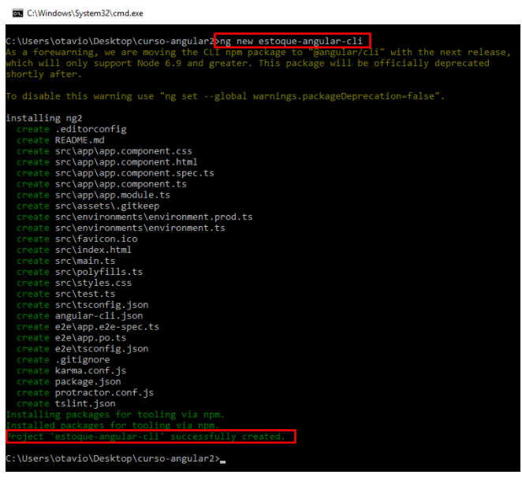
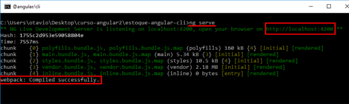
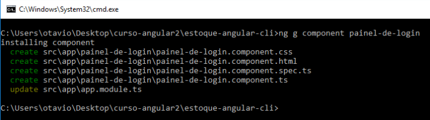
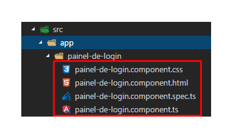

<main style="background-color: rgba(216, 216, 216, 0.398);">
    <div class="container-fluid">
        <h1> Como inicio o uso do <b> Angular</b> ? </h1>
        <p> Para que possamos usar o <b>Angular</b> é necssário que seja feita a instalção dele. Iniciamos a
            instalação,inicial pelo <b> Angular CLI </b>.</p>

        <p>O primeiro passo para utilizar o Angular CLI é realizar a sua instalação e, para tal, é necessário ter o
            Node.JS instalado. Caso ainda não o tenha, acesse o site do Node.js e baixe a última versão destinada ao seu
            sistema operacional.</p> &nbsp;

        <p> Com o Node.JS instalado, temos à disposição o comando npm, necessário para instalar o Angular CLI. Neste
            ponto, será preciso abrir o terminal do seu sistema operacional e digitar a instrução:</p> &nbsp;

        <p> Utilizamos o comando npm para invocar o Node Package Manager (gerenciador de pacotes do Node.JS) e através
            do parâmetro -g definimos que o pacote angular-cli deve ser disponibilizado globalmente em nosso computador.
        </p> &nbsp;

        <div class="d-flex justify-content-center">
            
        </div> &nbsp;
        <p> Para verificarmos se a instalação ocorreu corretamente, podemos executar o comando:</p> &nbsp;

        <div class="d-flex justify-content-center">
            
        </div> &nbsp;

        <p> A saída do comando acima deve ser a versão do angular-cli instalada:</p> &nbsp;

        <div class="d-flex justify-content-center">
            
        </div>&nbsp;
        <p> Feito isso, toda a estrutura inicial do projeto pode ser construída com um simples comando ng new NOME-DO-PROJETO. Vamos criar um projeto para, por exemplo, um estoque:</p>&nbsp;

        <div class="d-flex justify-content-center">
            
        </div>&nbsp;

        <p> Através do comando ng new NOME-DO-PROJETO você terá otimizado seu tempo gerando as principais funcionalidades necessárias para funcionando do seu projeto dentro do Angular, criando assim, arquivos com esse simples comando. </p> &nbsp;

        <p> Serão criados arquivos como: node_modules, app (com os componentes ts. html e css necessários para funcionamento da aplicação), pack.json, tsconfig.json e demais arquivos necessários para funcionamemto do Angular. </p> &nbsp;

        <div class="d-flex justify-content-center">
            
        </div> &nbsp;

        <p>Para iniciarmos um servidor local usando o Angular CLI utilizamos o comando ng serve.</p> &nbsp;

        <div class="d-flex justify-content-center">
            
        </div> &nbsp;

        <p>Com esse comando, seguiremos para nosso navegador de preferência e veremos que na nossa URL, utilizando o caminho http://localhost:4200 teremos a visualização da nossa single page Angular inicial</p> &nbsp;

        <p>Todos os arquivos, pastas e código estrutural inicial necessários são gerados e incluídos ao projeto automaticamente. Por exemplo, para criarmos um novo componente ao nosso projeto, usamos: ng g component painel-de-login: </p>&nbsp;

        <div class="d-flex justify-content-center">
            
        </div> &nbsp;

        <p>Abaixo podemos ver o resultado do comando ng g component painel-de-login em nosso projeto:</p>&nbsp;

        <div class="d-flex justify-content-center">
            
        </div> &nbsp;

        <p>Toda vez que geramos um novo component pelo CLI, é criado automaticamente uma pasta para agrupar os arquivos desse componente. Dentre eles, é criado um arquivo de estilos (CSS), um para a página (HTML), um arquivo de testes (spec.ts) e o próprio arquivo TypeScript (.ts) do component.</p>&nbsp;

        <p>Além disso, todo o código gerado por meio da ferramenta segue o guia oficial de estilos do Angular e já vem com arquivos de teste. Sempre que o CLI detecta alterações em qualquer arquivo, todos os testes sãore-executados por baixo dos panos para garantir a qualidade do projeto.</p> &nbsp;
    </div>
</main>